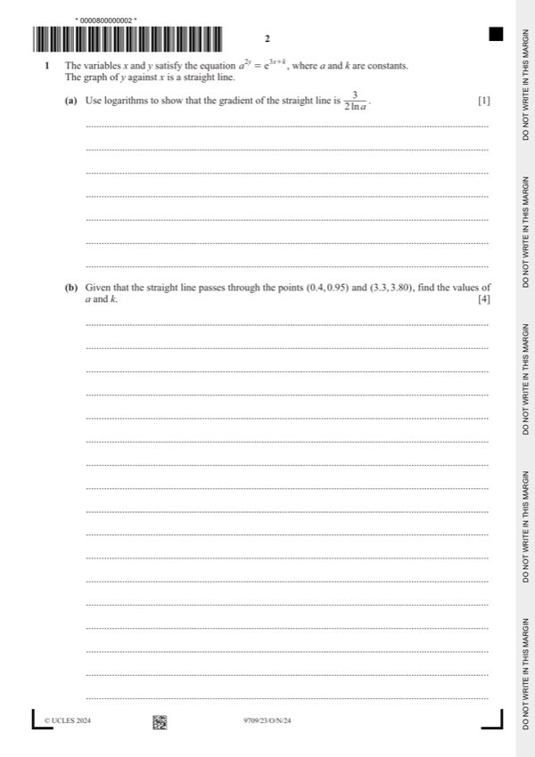
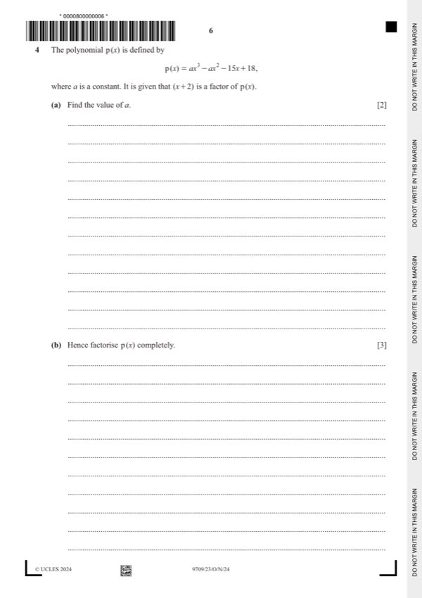
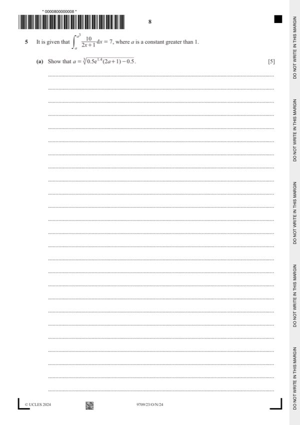
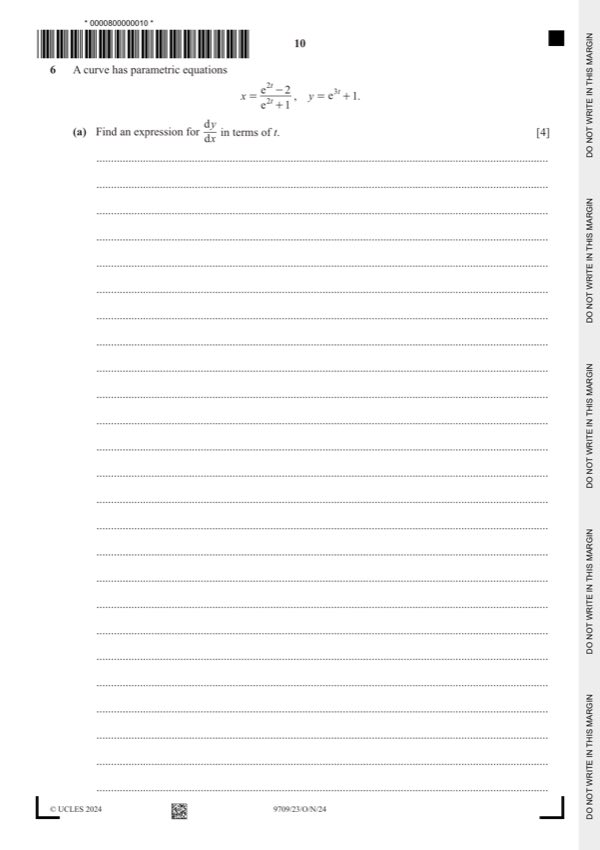

Question 1

Original paper page 2
Part 1(a) — solution
- [B1] AG – necessary detail needed
Mark points
- [B1] AG – necessary detail needed
Part 1 — solution
- [M1] Obtain/use: 1(b) 3
Mark points
- [M1] Obtain/use: 1(b) 3
Step-by-step solutions based on the mark scheme (not a mark-scheme dump).

Part 1(a) — solution
Part 1 — solution
Part 2 — solution
Part 2 — solution
Part 3 — solution
Part 3(a) — solution
Part 3(b) — solution
Part 3 — solution
Part 3 — solution
Part 3 — solution
Part 3 — solution

Part 4 — solution
Part 4 — solution
Part 4(a) — solution
Part 4(c) — solution
Part 4 — solution
Part 4 — solution
Part 4 — solution
Answer: 2

Part 5(a) — solution
Part 5 — solution

Part 6(a) — solution
Part 7(a) — solution
Part 7(c) — solution
Part 29 — solution